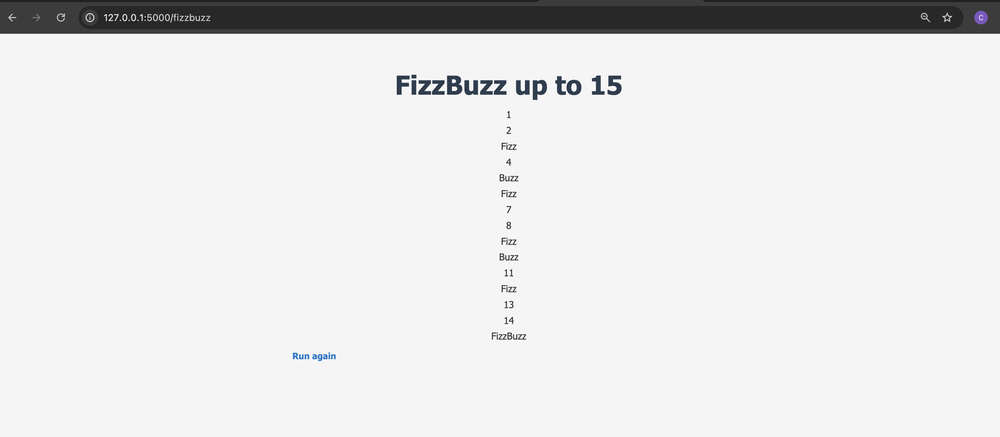

This project includes a Python program that implements a simple FizzBuzz algorithm with customized output, along with a shell script to run the Python program with optional arguments.
The program prints numbers from 1 to a given number n
(defaults to 15 if no argument is provided). However, for numbers
divisible by:
main.py: The Python program that
contains the FizzBuzz implementation.run.sh: The shell script that checks
if an argument is passed. If an argument is provided, it runs the Python
script with that argument; if not, it runs the Python script with the
default value 15.You can run the Python program directly by executing:
python3 main.py [n]from directory the file lives in or …
./problems/fizzbuzz/python/bartzcarter/run.sh [n]You can run the Test program directly by executing:
python -m unittest test.pyfrom the directory the file lives in or …
./run_tests.shRun app.py to bring up the server
python3 ./problems/fizzbuzz/python/bartzcarter/app.pyNavigate to: http://127.0.0.1:5000 where the app is being served
In the change the url to http://127.0.0.1:5000/api/fizzbuzz?number=<> … specify the input number by replacing <>
This hits the endpoint and returns a JSON response
python3 ./problems/fizzbuzz/python/bartzcarter/api_call.pyRunning this file will also hit the end point and return a JSON response:

In this example the response is being printed to std out
Here is the api call :
import requests
response = requests.get("http://127.0.0.1:5000/api/fizzbuzz", params={"number": 15})
if response.status_code == 200:
data = response.json()
print("Input:", data["input"])
print("Result:", data["result"])
else:
print("Error:", response.status_code)This is done by utilizing jinja 2 templating
Once the server is running, navigate to
http://127.0.0.1:5000

Submit the form and the fizzbuzz solution is displayed.
